2024 National 5 Chemistry - Paper 1 questions
Source: Scottish Qualifications Authority (SQA) / Qualifications Scotland. This is a StemInteract HTML companion, not an official HTML edition. Selectable text is supplied alongside original page images. Use the images or original PDF for equations, powers, fractions, vector notation, tables and diagrams; text extraction cannot fully preserve mathematical layout.
Jump to a question
PDF page 1
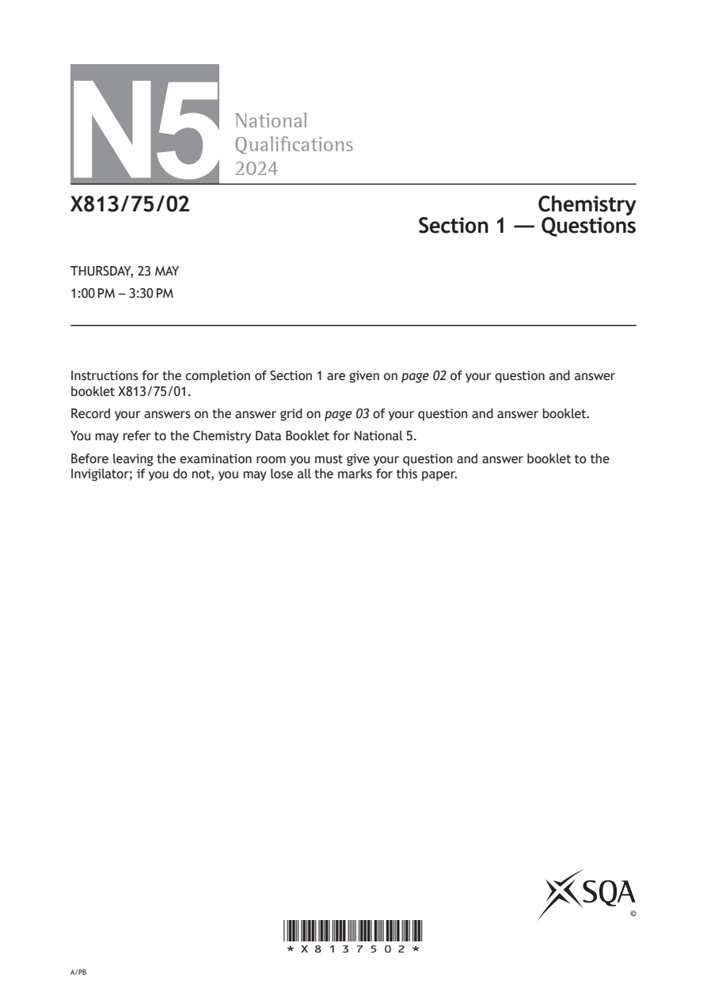
Selectable page text
N5
National
Qualications
2024
X813/75/02 Chemistry
Section 1 — Questions
THURSDAY, 23 MAY
1:00 PM – 3:30 PM
Instructions for the completion of Section 1 are given on page 02 of your question and answer
booklet X813/75/01.
Record your answers on the answer grid on page 03 of your question and answer booklet.
You may refer to the Chemistry Data Booklet for National 5.
Before leaving the examination room you must give your question and answer booklet to the
Invigilator; if you do not, you may lose all the marks for this paper.
©
*X8137502*
A/PBPDF page 2
Paper 1, Question 1Paper 1, Question 2Paper 1, Question 3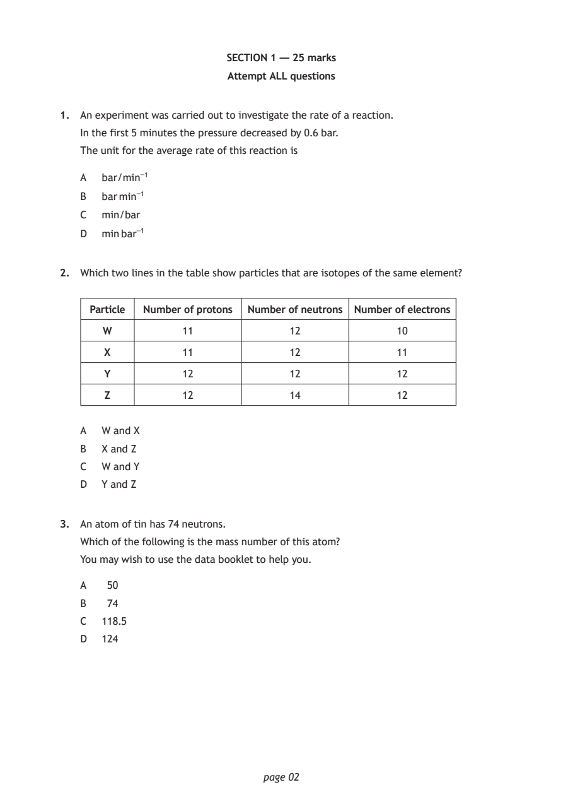
Selectable page text
SECTION 1 — 25 marks
Attempt ALL questions
1. An experiment was carried out to investigate the rate of a reaction.
In the first 5 minutes the pressure decreased by 0.6 bar.
The unit for the average rate of this reaction is
A bar/min⁻¹
B bar min⁻¹
C min/bar
D min bar⁻¹
2. Which two lines in the table show particles that are isotopes of the same element?
Particle Number of protons Number of neutrons Number of electrons
W 11 12 10
X 11 12 11
Y 12 12 12
Z 12 14 12
A W and X
B X and Z
C W and Y
D Y and Z
3. An atom of tin has 74 neutrons.
Which of the following is the mass number of this atom?
You may wish to use the data booklet to help you.
A 50
B 74
C 118.5
D 124
page 02PDF page 3
Paper 1, Question 4Paper 1, Question 5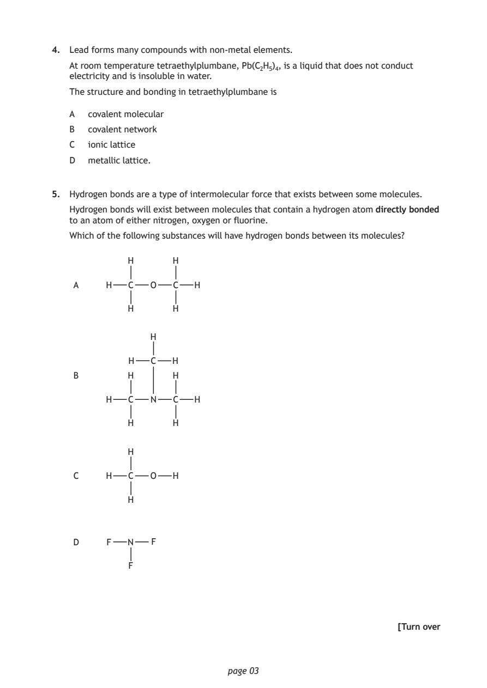
Selectable page text
4. Lead forms many compounds with non-metal elements.
At room temperature tetraethylplumbane, Pb(C₂H₅)₄, is a liquid that does not conduct
electricity and is insoluble in water.
The structure and bonding in tetraethylplumbane is
A covalent molecular
B covalent network
C ionic lattice
D metallic lattice.
5. Hydrogen bonds are a type of intermolecular force that exists between some molecules.
Hydrogen bonds will exist between molecules that contain a hydrogen atom directly bonded
to an atom of either nitrogen, oxygen or fluorine.
Which of the following substances will have hydrogen bonds between its molecules?
H H
A H C O C H
H H
H
H C H
B H H
H C N C H
H H
H
C H C O H
H
D F N F
F
[Turn over
page 03PDF page 4
Paper 1, Question 6Paper 1, Question 7Paper 1, Question 8Paper 1, Question 9Paper 1, Question 10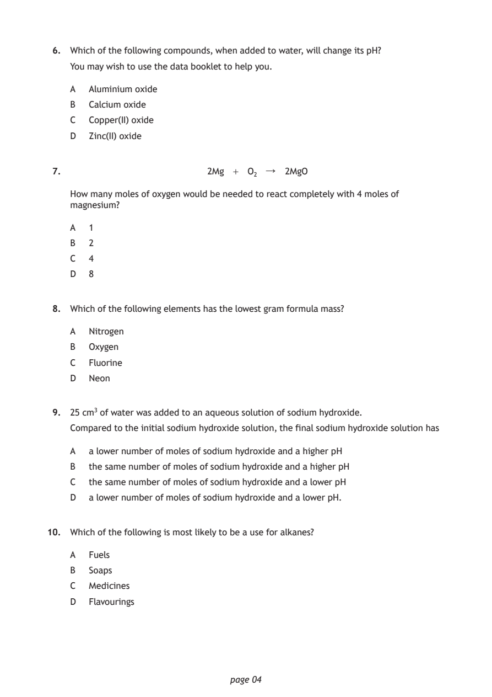
Selectable page text
6. Which of the following compounds, when added to water, will change its pH?
You may wish to use the data booklet to help you.
A Aluminium oxide
B Calcium oxide
C Copper(II) oxide
D Zinc(II) oxide
7. 2Mg + O₂ ↓ 2MgO
How many moles of oxygen would be needed to react completely with 4 moles of
magnesium?
A 1
B 2
C 4
D 8
8. Which of the following elements has the lowest gram formula mass?
A Nitrogen
B Oxygen
C Fluorine
D Neon
9. 25 cm³ of water was added to an aqueous solution of sodium hydroxide.
Compared to the initial sodium hydroxide solution, the final sodium hydroxide solution has
A a lower number of moles of sodium hydroxide and a higher pH
B the same number of moles of sodium hydroxide and a higher pH
C the same number of moles of sodium hydroxide and a lower pH
D a lower number of moles of sodium hydroxide and a lower pH.
10. Which of the following is most likely to be a use for alkanes?
A Fuels
B Soaps
C Medicines
D Flavourings
page 04PDF page 5
Paper 1, Question 11Paper 1, Question 12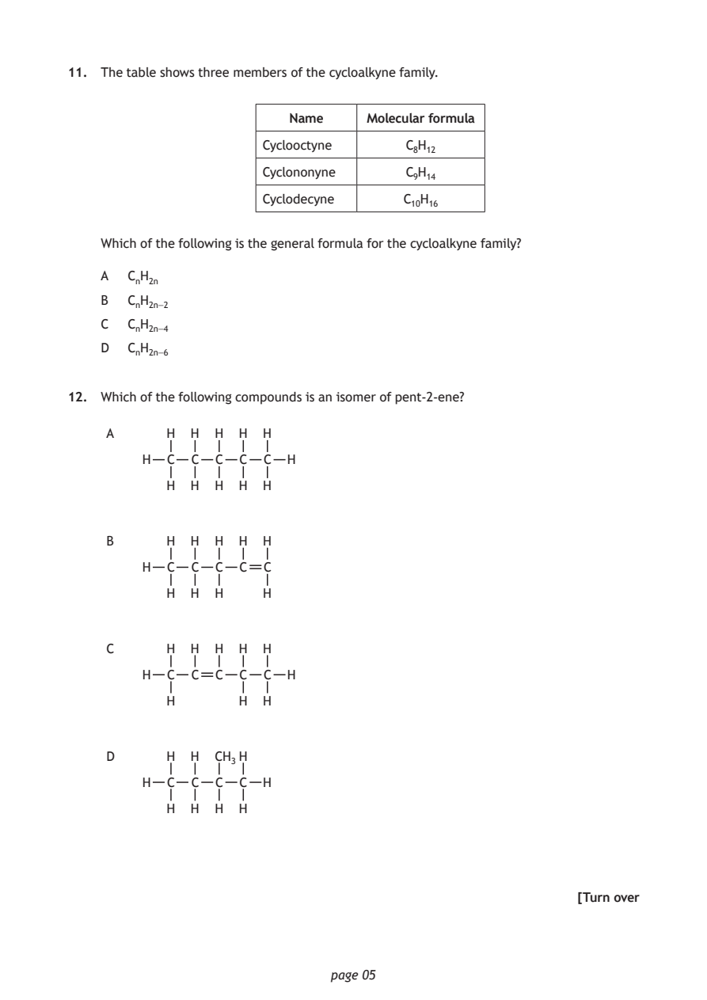
Selectable page text
11. The table shows three members of the cycloalkyne family.
Name Molecular formula
Cyclooctyne C₈H₁₂
Cyclononyne C₉H₁₄
Cyclodecyne C₁₀H₁₆
Which of the following is the general formula for the cycloalkyne family?
A CₙH₂ₙ
B CₙH₂ₙ₋₂
C CₙH₂ₙ₋₄
D CₙH₂ₙ₋₆
12. Which of the following compounds is an isomer of pent-2-ene?
A H H H H H
H C C C C C H
H H H H H
B H H H H H
H C C C C C
H H H H
C H H H H H
H C C C C C H
H H H
D H H CH₃H
H C C C C H
H H H H
[Turn over
page 05PDF page 6
Paper 1, Question 13Paper 1, Question 14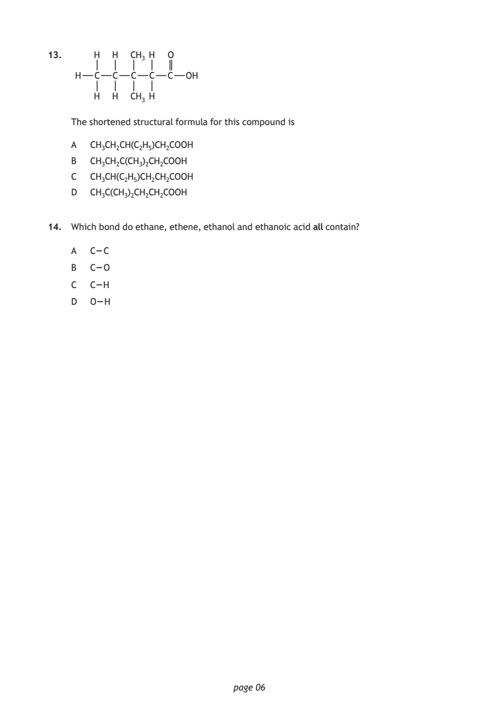
Selectable page text
13. H H CH₃ H O
H C C C C C OH
H H CH₃ H
The shortened structural formula for this compound is
A CH₃CH₂CH(C₂H₅)CH₂COOH
B CH₃CH₂C(CH₃)₂CH₂COOH
C CH₃CH(C₂H₅)CH₂CH₂COOH
D CH₃C(CH₃)₂CH₂CH₂COOH
14. Which bond do ethane, ethene, ethanol and ethanoic acid all contain?
A C – C
B C – O
C C –H
D O –H
page 06PDF page 7
Paper 1, Question 15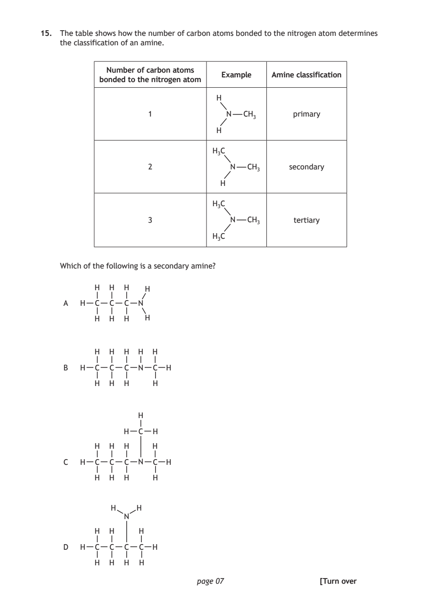
Selectable page text
15. The table shows how the number of carbon atoms bonded to the nitrogen atom determines
the classification of an amine.
Number of carbon atoms
Example Amine classification
bonded to the nitrogen atom
H
1 N CH₃ primary
H
H₃C
2 N CH₃ secondary
H
H₃C
3 N CH₃ tertiary
H₃C
Which of the following is a secondary amine?
H H H H
H C C N
H H H
page 07
H
A C
H H H H H
B H C C C N C H
H H H H
H
H C H
H H H H
C H C C C N C H
H H H H
H H
N
H H H
D H C C C C H
H H H H
[Turn overPDF page 8
Paper 1, Question 16Paper 1, Question 17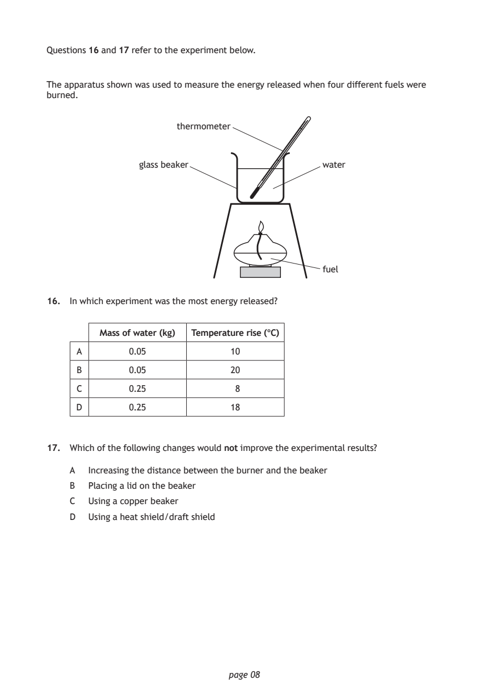
Selectable page text
Questions 16 and 17 refer to the experiment below.
The apparatus shown was used to measure the energy released when four different fuels were
burned.
thermometer
glass beaker water
fuel
16. In which experiment was the most energy released?
Mass of water (kg) Temperature rise (°C)
A 0.05 10
B 0.05 20
C 0.25 8
D 0.25 18
17. Which of the following changes would not improve the experimental results?
A Increasing the distance between the burner and the beaker
B Placing a lid on the beaker
C Using a copper beaker
D Using a heat shield/draft shield
page 08PDF page 9
Paper 1, Question 18Paper 1, Question 19Paper 1, Question 20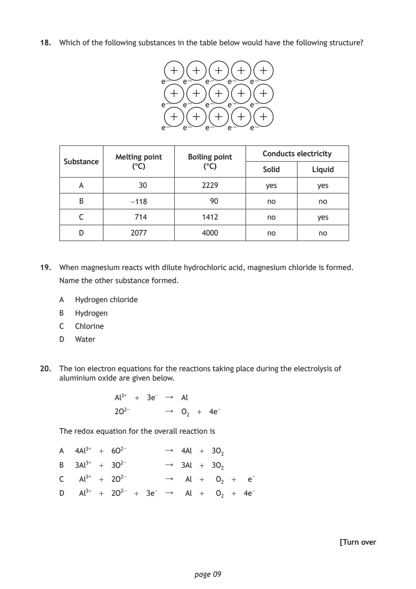
Selectable page text
18. Which of the following substances in the table below would have the following structure?
+ + + + +
e− e− e− e− e−
+ + + + +
e− e− e− e− e−
+ + + + +
e− e− e− e− e−
Conducts electricity
Melting point Boiling point
Substance
(°C) (°C)
Solid Liquid
A 30 2229 yes yes
B -118 90 no no
C 714 1412 no yes
D 2077 4000 no no
19. When magnesium reacts with dilute hydrochloric acid, magnesium chloride is formed.
Name the other substance formed.
A Hydrogen chloride
B Hydrogen
C Chlorine
D Water
20. The ion electron equations for the reactions taking place during the electrolysis of
aluminium oxide are given below.
Al³⁺ + 3e⁻ ↓ Al
2O²⁻ ↓ O₂ + 4e⁻
The redox equation for the overall reaction is
A 4Al³⁺ + 6O²⁻ ↓ 4Al + 3O₂
B 3Al³⁺ + 3O²⁻ ↓ 3Al + 3O₂
C Al³⁺ + 2O²⁻ ↓ Al + O₂ + e⁻
D Al³⁺ + 2O²⁻ + 3e⁻ ↓ Al + O₂ + 4e⁻
[Turn over
page 09PDF page 10
Paper 1, Question 21Paper 1, Question 22Paper 1, Question 23Paper 1, Question 24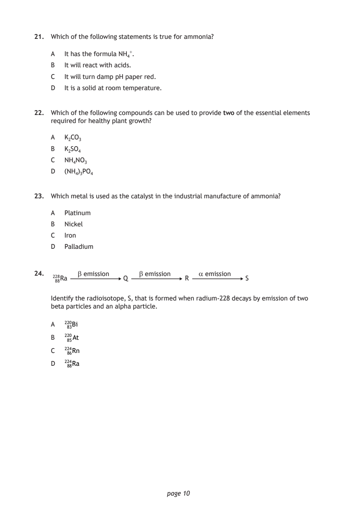
Selectable page text
21. Which of the following statements is true for ammonia?
A It has the formula NH₄⁺.
B It will react with acids.
C It will turn damp pH paper red.
D It is a solid at room temperature.
22. Which of the following compounds can be used to provide two of the essential elements
required for healthy plant growth?
A K₂CO₃
B K₂SO₄
C NH₄NO₃
D (NH₄)₃PO₄
23. Which metal is used as the catalyst in the industrial manufacture of ammonia?
A Platinum
B Nickel
C Iron
D Palladium
24. β emission β emission α emission
228Ra Q R S
88
Identify the radioisotope, S, that is formed when radium-228 decays by emission of two
beta particles and an alpha particle.
A ²20Bi
83
B ²20At
85
C ²24Rn
86
D ²24Ra
88
page 10PDF page 11
Paper 1, Question 25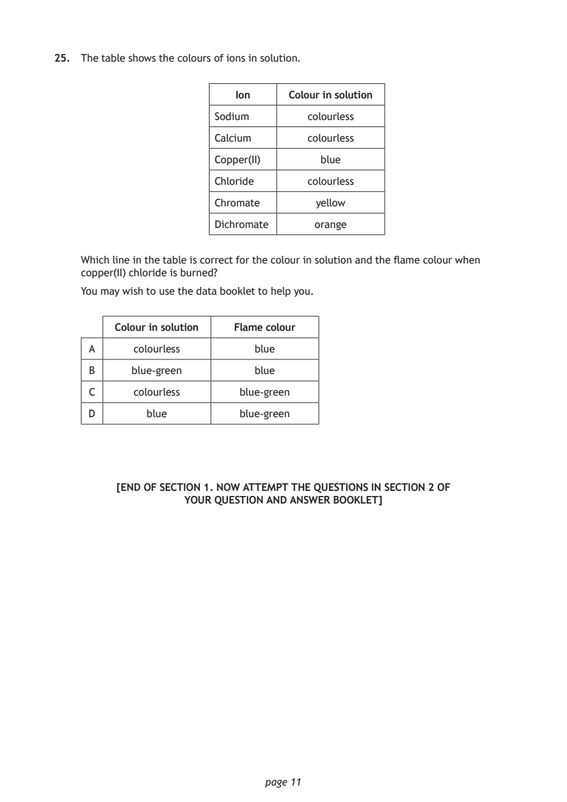
Selectable page text
25. The table shows the colours of ions in solution.
Ion Colour in solution
Sodium colourless
Calcium colourless
Copper(II) blue
Chloride colourless
Chromate yellow
Dichromate orange
Which line in the table is correct for the colour in solution and the flame colour when
copper(II) chloride is burned?
You may wish to use the data booklet to help you.
Colour in solution Flame colour
A colourless blue
B blue-green blue
C colourless blue-green
D blue blue-green
[END OF SECTION 1. NOW ATTEMPT THE QUESTIONS IN SECTION 2 OF
YOUR QUESTION AND ANSWER BOOKLET]
page 11PDF page 12

Selectable page text
[BLANK PAGE]
DO NOT WRITE ON THIS PAGE
page 12